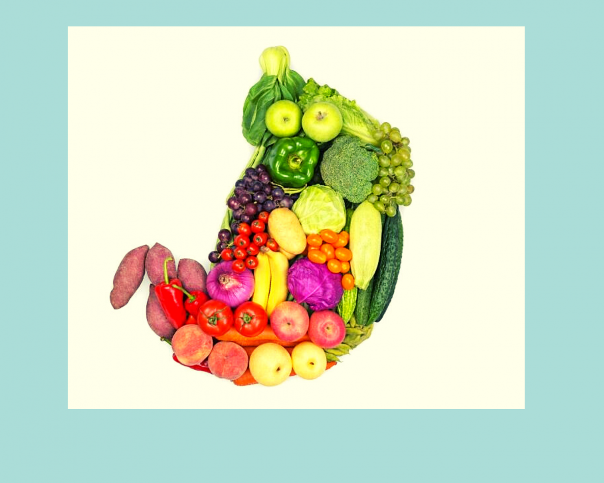
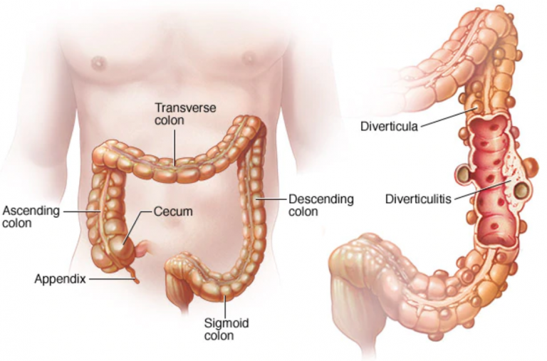
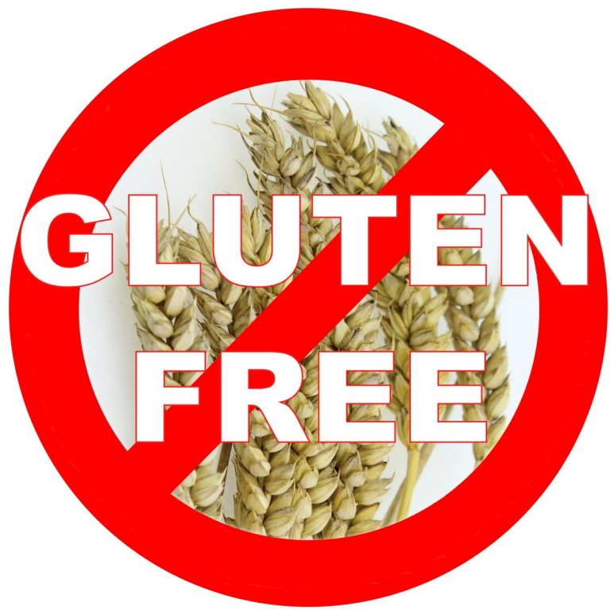

促进消化道健康的营养保健（下）

十字花科类蔬菜可以预防消化道癌症
十字花科类蔬菜，例如西兰花，花椰菜，抱子甘蓝(brussels sprouts)，芦笋，羽衣甘蓝 (collard greens)，大白菜等有含硫化合物属于强抗氧化素具有预防癌症的作用。含硫化合物的抗癌特性包括 （a）对致癌元素的解毒和排除，（b）抑制肿瘤细胞增殖，（c）抗菌作用，（d）清除自由基，（e）抑制致癌DNA组合的形成，（ f）诱导癌细胞周期停滞和凋亡等。研究人员发现含丰富十字花科类蔬菜的饮食可以大大降低肛癌和大肠癌的风险。如果您有胃肠道癌的家族病史，我强烈建议你多吃十字花科类蔬菜和高膳食纤维食物以预防疾病。
呕吐，腹泻导致的脱水和电解质失衡要及时补充
呕吐或腹泻是常见的消化道感染或紊乱的临床症状。当你呕吐或腹泻时，你会流失大量的体液和电解质，例如钠，钾，钙，镁，氯化物，磷酸盐等。如果没有足够补充流失的体液和电解质，人体会出现脱水和电解质失衡的情况，严重的脱水情况会危及生命，特别是针对婴幼儿脱水要特别重视。前几年，美国发生好几起高温烈日下儿童被家人忘在封闭的汽车内致死的事件，说明婴幼儿很容易脱水而致命。那么脱水了怎么补救呢？水是我们人体的主要组成部分，人体的细胞都是活在水里。如果你的细胞缺水，许多人体机制将无法正常运行。例如，您的肾脏将无法有效清除体内的废物毒素，和因缺少血液容量造成的的低血压等。电解质可以调解和维持体内血液正常容量和pH值的平衡。它们还参与其他的人体机制功能比如神经冲动，肌肉收缩，心脏收缩，大脑活动等的功能。当人体内电解质失衡时，可能会导致以上这些功能的紊乱，具体体现的症状诸如肌肉无力，痉挛，抽筋，瘫痪，呼吸不畅，心率不齐等症状，所以我们要懂得在补充由于呕吐或腹泻引起的脱水时，同时需要补充流失的电解质。因此，选择喝Pedialyte和Gatorade要比纯净水更好。如果你没有这些补充电解质的饮料，在平常喝的水或鸡汤中加些盐也是有很大帮助的。
大肠憩室病和憩室炎

憩室病是指胃肠道任何一部分向外的像小袋子一样的囊状突起，通常发生在大肠，可能是数个憩室同时存在，称为憩室病。如果憩室发生感染，称为憩室炎。憩室病在老年人中发生比较的普遍。憩室病的起因与低膳食纤维摄入以及经常便秘有密切关系。便秘时我们会用劲排便，于是在结肠壁上施加了额外的压力，这种压力会导致结肠壁较薄弱部位往外凸出从而产生了憩室。在正常情况下憩室患者不会有什么问题，但是当一个或多个憩室感染发炎时，这时类似于肠胃炎的临床症状开始出现了，比如发烧，腹痛，恶心，呕吐，发冷，便秘，直肠出血等麻烦症状。憩室发炎可能是由于小块食物卡在憩室中而引起细菌过度生长而发炎。那么怎样防止憩室炎的发生呢？请参考以下几项建议 （a）增加膳食纤维的摄入量，高膳食纤维的食物有粗粮，蔬菜，水果，豆类，坚果等。如果以一天2000 卡路里摄入量为标准，你每天至少要摄取28 克的纤维素。 （b）饮用足够的水分。基于2000 卡路里的热量，每天建议至少喝2升的水分，可包括咖啡，茶等饮品。 （c）坚持多运动可以帮助肠胃蠕动从而更顺畅的排便。尝试至少每天运动30分钟。老年人的身体状况可能会限制他们的运动的强度，因此便秘在老年人中更为常见。注意事项，如果憩室炎症爆发时，短期内你不能再吃高膳食纤维的食物了，反而要选择低纤维素和低消化残留食物，多吃一些容易消化和流质食物直到完全恢复。
针对麦胶性肠病的无麦蛋白饮食食疗

麦胶性肠病是一种自身免疫系统疾病。世界上约1％的人口患有这种病。患有麦胶性肠疾病的人需要避免食用含麦蛋白的食物，因为这类食物会损坏小肠内壁组织。当病患摄入含麸质蛋白的食物时，自身免疫系统会将其视为外来异物而引起攻击小肠绒毛的免疫反应。这种免疫反应的损害会使小肠绒毛变平，小肠绒毛缺少了褶皱就造成它的吸收面变少了，从而损害了对营养成分的吸收。发病的症状包括腹部绞痛，慢性腹泻，疲劳，气胀，贫血，便秘等。未经治疗的乳糜泻或麦胶性肠病可导致长期的营养不良和健康并发症，比如缺铁，矿物质和营养素缺乏症，贫血，胰腺功能衰退，胃肠道癌，不孕症，胆囊功能失调，神经系统失衡等。目前尚无有效治愈麦胶性肠病-—而唯一的预防方法是从饮食中完全避免麦蛋白质。含麦蛋白的食物包括小麦（包括各种小麦和小麦衍生物），黑麦，大麦，受麸质污染的燕麦，碾碎干小麦，蒸粗麦粉，黑小麦，麦芽，啤酒酵母，啤酒等。请一定仔细阅读食品标签以确定是否含有麦蛋白，如果不确定，请不要食用。常见食品有面食，面包，糕点，蛋糕，谷物，小麦增稠的酱汁和肉汁，啤酒等等等。某些食物不是由麦谷制成的，但是在加工过程中使用了加工含麦食物的仪器器具，所以除非包装上有写明“无麦蛋白”，要不然不要买。如果不吃麦类食物，那还有什么可以选择呢？麦类食物的常见替代品有大米，玉米和淀粉类蔬菜等。坚持一段时间的无麦蛋白饮食，小肠绒毛会慢慢修复从而逐渐改善它的吸收功能。这种饮食必须长期坚持，不可半途而废。
运动使排便跟顺畅
我在前文提到过老年人更容易出现便秘问题，这可能与老年人缺乏运动和胃肠道蠕动减慢有关。根据哈佛大学的一项研究，人体活动对促进大肠蠕动是有积极有效果的。经常运动的人通常不会经常便秘。定期运动可以改善和加强腹腔和胸腔的肌肉张力，有助于更顺畅的排便。这对于老年人群特别有帮助。每天至少锻炼身体30分钟，不仅可以改善肠胃健康，而且可以改善其他各方面的健康状况。 大家都运动起来吧！
回到上面